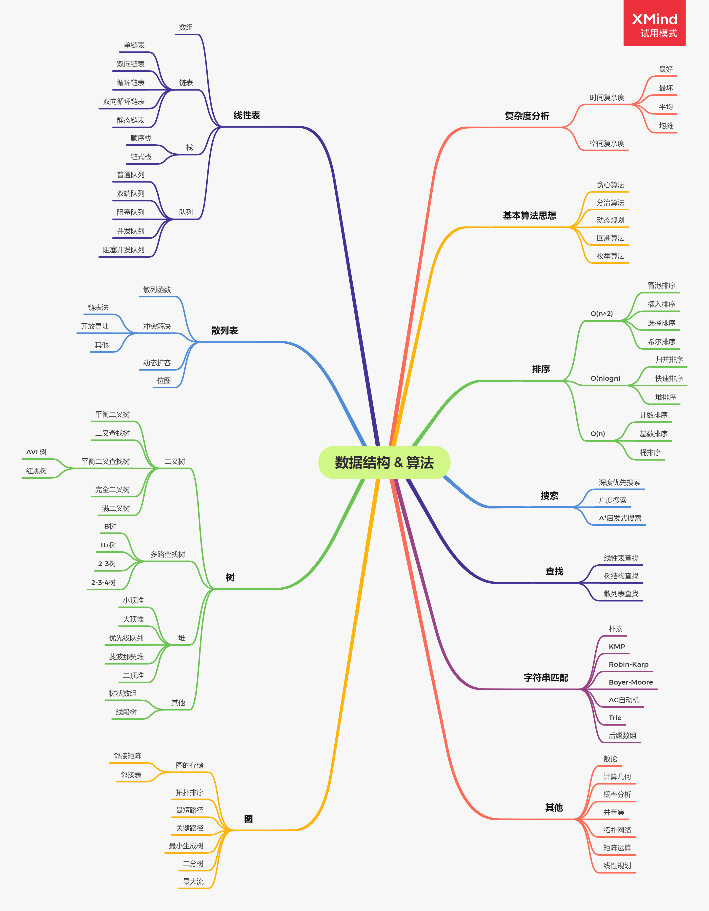

zhuzhu's blog
知识总结与记录
首页
HTML
javascript
CSS
浏览器
vue
计算机网络
node
每日算法
标签
归档
0%
数据结构&算法
数据结构&算法

数据结构(理论篇)
线性表
算法(理论篇)
算法与数据结构(学习篇/实战篇)
数组、栈、队列
前端算法学习
坚持每天学习算法，并且将对算法进行总结并且记录学习成果跟个人的学习理解
基础篇
数组、栈、队列
每日一题
【day-01】 66.加一
【day-02】 821.字符的最短距离
【day-03】 1381.设计一个支持增量操作的栈
【day-04】 394.字符串解码
【day-05】 232.用栈实现队列
【day-06】 768.最多能完成排序的块II